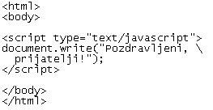
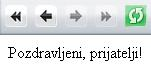
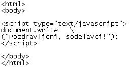
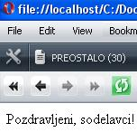
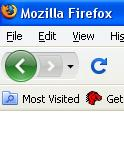

Ni mi žal, da me ljudje ne poznajo, paè pa mi je žal, da jaz ne poznam ljudi. (Konfucij)
Slike 1 do 4: Imena - koda in videz spletne strani  Sliki 5 in 6: Prelom vrstice - koda in videz spletne strani   Slike 7 do 9: Prelom vrstice - koda in videz spletne strani; primerjava odziva Opere in Mozille 1. Izdelaj spletno stran, ki bo izgledala tako, kot kažejo slike od 1 do 4. Datoteki poimenuj "30apriimek.html" in "30bpriimek.html". Ne pozabi na konènico ".html". 2. Izdelaj spletno stran, ki bo izgledala tako, kot kažeta sliki 5 in 6. Datoteko poimenuj "30cpriimek.html". Ne pozabi na konènico ".html". 3. Izdelaj spletno stran, ki bo izgledala tako, kot kažeta sliki 7 in 8. Datoteko poimenuj "30dpriimek.html". Ne pozabi na konènico ".html". POZOR: Najprej NATANÈNO izdelaj vajo v tej uèni enoti in jo pokaži profesorju, nato zapiši odgovore na spodnja vprašanja. 3. V kodo primera v tej uèni enoti vstavi spodaj navedene komentarje na ustrezna mesta, ki jih ti komentarji pojasnjujejo. //Prirejanje vrednosti spremenljivki tipa niz. //Prelom vrstice kode v JavaScriptu znotraj niza. //Napoved spremenljivke tipa niz. //Ukaz za izpis v JavaScriptu. //Prelom vrstice kode v JavaScriptu izven niza. 4. Kodo primera v tej uèni enoti spremeni tako, da bo vsebovala napovedi dveh nizov. Tema dvema spremenljivkama, ki sta niza, priredi vrednosti, ki sta enaki tvojemu inemu in priimku. Prvemu nizu priredi vrednost, ki je tvoje ime. Drugemu nizu priredi vrednost, ki je tvoj priimek. 1. Vprašanja za usmerjanje pozornosti in usvajanje novih besed: 1. Kako lahko prekinemo ali prelomimo vrstico kode v JavaScriptu? 2. Na katerem mestu lahko vstavimo prekinitev ali prelom vrstice v JavScriptu? 3. Na katerem mestu ne moremo vstaviti prekinitve ali preloma vrstice v JavScriptu? 2. Zapiši od ene do pet kljuènih besed, ki povzemajo vsebino te uène enote. 3. Vprašanja za razmislek in povezovanje z lastno izkušnjo: 1. V èem se razlikujeta kodi na slikah 1 in 3? 2. V èem se razlikujeta spletni strani na slikah 2 in 4? 3. Katera koda je pravilna; tista na sliiki 1 ali tista na sliki 3? 4. Zakaj na spletni strani na sliki 4 ni izpisa imena "Triglav? 5. V èem se razlikujeta kodi na slikah 5 in 7? 6. V èem se razlikujeta spletni strani na slikah 8 in 9? 7. V katerem brksalniku ne smemo prelomiti vrsice izven niza znakov? 4. Domaèa naloga: 1. V zvezek prepiši misel, ki je zapisana na zaèetku uène enote z rdeèimi èrkami. Zabeleži nekaj lastnih misli, ki se ti utrnejo ob razmišljanju o njej. 2. Odgovori na vprašanja, na katere nisi uspel/a odgovoriti v šoli. 5. DODATNO DELO: 1. Izdelaj spletno stran, ki bo izgledala tako, kot kažeta sliki 6 in 7. Datoteko poimenuj "30epriimek.html". Ne pozabi na konènico ".html". |